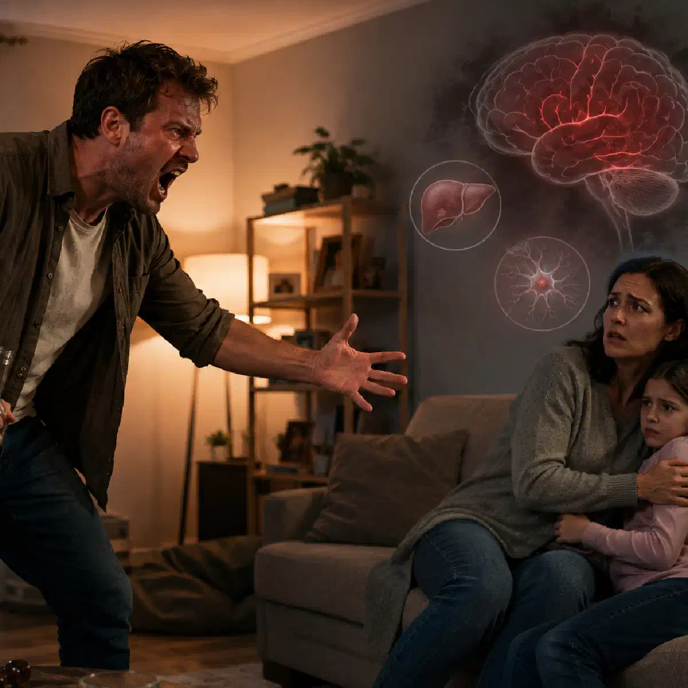

+38(068) 79 72 782
+38(068) 79 72 782Агресія після вживання алкоголю
Поради лікаря-нарколога


Безкоштовна консультація, працюємо цілодобово 24/7
Поради лікаря-нарколога

Дата написання: 14 черв. 2026 р.
Останнє оновлення: 14 черв. 2026 р.
Агресія після вживання алкоголю може проявлятися дратівливістю, грубістю, погрозами, руйнівною поведінкою або фізичними діями щодо оточення. Такий стан небезпечний не лише для самої людини, а й для родичів, випадкових людей і медичних працівників. Алкоголь знижує самоконтроль, погіршує оцінювання наслідків і може посилювати вже наявні емоційні або психічні проблеми.
При цьому не можна стверджувати, що спиртне робить агресивною кожну людину. Реакція залежить від кількості випитого, особливостей нервової системи, характеру, обстановки, наявності алкогольної залежності, вживання інших речовин і психічного стану. У деяких випадках агресія з’являється лише при вираженому сп’янінні, а в інших людей виникає навіть після відносно невеликої дози.
Родичам важливо не вступати у відкритий конфлікт і насамперед забезпечити власну безпеку. Якщо людина погрожує оточенню, тримає в руках небезпечні предмети, не впізнає близьких, має галюцинації або здійснює неконтрольовані дії, необхідна екстрена допомога. Консультація нарколога та лікування алкогольної залежності проводяться після оцінювання стану й усунення безпосередньої загрози.
Алкоголь впливає на структури головного мозку, які відповідають за самоконтроль, прийняття рішень і прогнозування наслідків. У міру посилення сп’яніння людина гірше оцінює ситуацію, стає імпульсивнішою та може реагувати на звичайні слова як на загрозу або образу. Одночасно знижується здатність контролювати емоції. Роздратування, ревнощі, образа або прихований конфлікт, які у тверезому стані вдається стримувати, після вживання алкоголю можуть проявлятися значно сильніше. Людина говорить різкіше, підвищує голос, провокує сварку та здійснює вчинки, про які пізніше може шкодувати.
Агресивність також може посилюватися на тлі втоми, недосипання, стресу, сімейних конфліктів і тривалого запою. Після кількох днів вживання нервова система виснажується, з’являється тривожність, порушується сон і підвищується чутливість до будь-яких зовнішніх подразників. Якщо напади повторюються регулярно, не можна розглядати їх лише як особливість характеру. Повторна алкогольна агресія може бути однією з ознак формування залежності та потребує консультації нарколога в Києві.
На початковому етапі сп’яніння людина може відчувати розслаблення, упевненість та емоційне піднесення. Одночасно вже знижується критичне ставлення до власних слів і вчинків. Вона може ставати надмірно балакучою, нав’язливою або схильною до ризикованих дій. Зі збільшенням дози погіршуються увага, координація та здатність правильно розуміти поведінку оточення. Нейтральне зауваження може сприйматися як насмішка, спроба контролю або провокація. Виникає імпульсивність, а реакція на конфлікт стає непропорційно різкою.
При тяжкому сп’янінні поведінка може ставати хаотичною. Людина не завжди розуміє, де перебуває, неправильно оцінює небезпеку та може завдати шкоди собі або оточенню. Поєднання алкоголю з наркотиками, снодійними, заспокійливими препаратами або психостимуляторами робить реакцію ще менш передбачуваною. Після тривалого вживання зміни поведінки можуть зберігатися і в період протверезіння. Тривожність, дратівливість, безсоння та внутрішнє напруження нерідко пов’язані вже не зі сп’янінням, а з абстинентним синдромом, що починається.
Однією з головних причин є зниження самоконтролю. Алкоголь послаблює внутрішні обмеження, тому людина легше переходить від словесного конфлікту до погроз або фізичних дій. При цьому вона гірше усвідомлює можливі наслідки. Велике значення мають індивідуальні особливості. Ризик агресивної поведінки вищий у людей, які й у тверезому стані відрізняються імпульсивністю, погано сприймають критику, схильні до ревнощів або звикли вирішувати конфлікти силою. Однак спокійна поведінка у тверезому стані також не гарантує відсутності небезпечної реакції після великої дози алкоголю.
Провокуючими чинниками можуть стати сімейна сварка, фінансові проблеми, відчуття приниження, страх, ревнощі або спроби родичів забрати алкоголь. Іноді агресія спрямована на конкретну людину, а іноді стає загальною та непередбачуваною. Причиною можуть бути алкогольна залежність, абстинентний синдром, травма голови, психічний розлад або поєднання спиртного з іншими речовинами. Крапельниця від алкоголю вдома в Харкові може розглядатися лише після огляду нарколога та при відносно стабільному стані пацієнта, коли відсутні активна агресія, психоз та інші небезпечні симптоми. Якщо агресія супроводжується галюцинаціями, вираженою сплутаністю свідомості або дезорієнтацією, потрібне термінове медичне оцінювання.
Перші ознаки можуть з’явитися задовго до фізичного конфлікту. Людина починає говорити голосніше, перебиває оточення, повторює одні й ті самі претензії, підходить надто близько та різко реагує на спроби змінити тему. Насторожуючими проявами є стиснуті кулаки, напружена поза, різкі рухи, погрози, образи та демонстративне пошкодження предметів. Людина може блокувати вихід із кімнати, забирати телефон, не дозволяти близьким піти або вимагати продовження суперечки.
Небезпечнішим стає стан, при якому пацієнт перестає впізнавати оточення, чує голоси, бачить неіснуючих людей або впевнений, що йому хочуть нашкодити. Подібні симптоми можуть бути пов’язані з психозом, тяжкою інтоксикацією або алкогольним делірієм. Якщо поведінка швидко змінюється, людина озброюється небезпечним предметом, намагається когось ударити або погрожує собі, родичам потрібно залишити небезпечне місце та звернутися до екстрених служб.
Вербальна агресія проявляється криками, образами, приниженням, погрозами та провокаціями. Вона може не супроводжуватися фізичними діями, але здатна швидко перейти в небезпечнішу форму. Предметна агресія спрямована на майно. Людина розбиває посуд, ламає меблі, кидає речі або пошкоджує автомобіль. Така поведінка показує, що контроль над імпульсами вже значно знижений.
Фізична агресія включає спроби штовхнути, вдарити або утримувати іншу людину. У цій ситуації родичам не слід самостійно вступати в боротьбу, особливо якщо агресивна людина фізично сильніша або поруч знаходяться небезпечні предмети. Також зустрічається прихована агресія: провокаційна поведінка, переслідування, психологічний тиск і навмисне створення небезпечних ситуацій. Будь-яка форма, що викликає страх або загрозу безпеці, потребує серйозного ставлення. Якщо напади повторюються після вживання спиртного, необхідно розпочати лікування алкоголізму в Одесі , оскільки без усунення залежності агресивна поведінка може виникати знову.
Після вживання великої кількості алкоголю можуть виникати провали в пам’яті. У такій ситуації людина здатна розмовляти, пересуватися та виконувати складні дії, однак мозок не формує повноцінних довготривалих спогадів про те, що відбувається. Тому наступного дня пацієнт може щиро не пам’ятати сварку, погрози або власні дії. Це не завжди означає, що він навмисно обманює родичів. Однак відсутність спогадів не скасовує відповідальності за наслідки поведінки.
Фрагментарні провали іноді частково відновлюються після підказок. При більш вираженій алкогольній амнезії окремий період може повністю бути відсутнім у пам’яті. Повторення таких епізодів є тривожною ознакою ризикованого вживання. Втрата пам’яті після алкоголю також потребує виключення травми голови, судомного нападу, вживання інших речовин і деяких неврологічних станів. Особливо важливо звернутися по медичну допомогу, якщо амнезія супроводжується незвичайною сонливістю, порушенням мовлення, слабкістю кінцівок або повторним погіршенням свідомості.
Агресивна поведінка не завжди означає наявність психічного захворювання. У багатьох людей вона пов’язана безпосередньо зі сп’янінням, зниженням самоконтролю та конфліктною ситуацією. Однак у деяких випадках алкоголь посилює вже наявні психічні порушення. Насторожувати повинні галюцинації, маячні переконання, різка підозрілість, виражена дезорієнтація та неможливість установити нормальний контакт. Людина може стверджувати, що її переслідують, чути голоси або бачити загрозу там, де її немає.
Подібний стан може виникати при алкогольному психозі, делірії, вживанні психостимуляторів, тяжкому недосипанні або загостренні психічного захворювання. Самостійно визначити причину за зовнішніми ознаками неможливо. Якщо агресія супроводжується порушенням сприйняття реальності, пацієнту потрібне термінове медичне оцінювання. Звичайна розмова, сон, домашня крапельниця або кодування від алкоголізму в Дніпрі не замінюють невідкладної допомоги при психозі. До питання кодування можна повертатися лише після стабілізації стану, відновлення тверезості та консультації нарколога.
Головне завдання родичів — зберегти безпеку. Необхідно триматися ближче до виходу, не заходити в тісне приміщення та за можливості вивести дітей і людей похилого віку з небезпечної зони. Телефон повинен залишатися доступним.
Розмовляти слід спокійно, короткими фразами та без звинувачень. Краще не доводити людині, що вона п’яна або не має рації, оскільки у стані сп’яніння логічні аргументи часто не сприймаються та можуть посилити конфлікт. Необхідно зберігати фізичну дистанцію та не робити різких рухів. Якщо людина вимагає залишити її наодинці й при цьому не становить безпосередньої небезпеки, краще тимчасово припинити розмову.
При погрозах, фізичному насильстві, наявності зброї або небезпечних предметів потрібно залишити приміщення та викликати екстрені служби. Якщо присутні галюцинації, судоми, втрата свідомості, порушення дихання або біль у грудях, потрібна невідкладна медична допомога. Виведення із запою вдома в Запоріжжі може проводитися лише після огляду спеціаліста, коли пацієнт доступний для контакту, а його поведінка не становить безпосередньої загрози для оточення. Після протверезіння важливо обговорити те, що сталося, та запропонувати консультацію спеціаліста. Розмову слід будувати навколо конкретних фактів і наслідків, а не загальних звинувачень.
Говорити краще повільно та нейтральним тоном. Фрази повинні бути простими: «Я не хочу сваритися», «Давай обговоримо це пізніше», «Зараз важливо, щоб усі були в безпеці». Не варто перевантажувати людину довгими поясненнями. Необхідно уникати сарказму, насмішок і наказового тону. Навіть справедливе зауваження може сприйматися як приниження та спровокувати посилення агресії.
Не слід підходити впритул, хапати людину за руки або намагатися силою забрати пляшку. Безпечніше запропонувати їй сісти, знизити гучність розмови та вивести зайвих людей із кімнати. Не можна обіцяти те, чого родичі не збираються виконувати. Краще спокійно позначити межу: при погрозах і насильстві розмова припиняється, а для захисту оточення будуть викликані відповідні служби.
Не можна вступати у фізичну боротьбу, якщо немає безпосередньої необхідності захистити себе та залишити небезпечне місце. Спроба самостійно утримати людину може призвести до травм обох сторін. Не слід кричати, ображати, принижувати або нагадувати всі минулі конфлікти. Така тактика рідко заспокоює та зазвичай лише посилює емоційне напруження.
Не можна давати агресивній людині заспокійливі, снодійні або інші препарати без призначення лікаря. Поєднання деяких ліків з алкоголем може викликати пригнічення дихання, порушення свідомості та інші небезпечні наслідки.
Не слід намагатися викликати блювання, обливати людину холодною водою або змушувати її активно рухатися. Ці методи не прискорюють безпечне протверезіння та можуть призвести до ускладнень. Також не можна залишати без нагляду людину з тяжким сп’янінням, порушенням свідомості або повторним блюванням. При появі небезпечних симптомів потрібна екстрена допомога.
При легкій дратівливості іноді допомагає припинення суперечки, спокійна обстановка, зменшення кількості людей у приміщенні та фізична дистанція. Однак заздалегідь передбачити розвиток ситуації неможливо. Якщо людина здатна підтримувати контакт, розуміє звернену до неї мову та не погрожує оточенню, можна запропонувати відпочити та повернутися до розмови після протверезіння. При цьому не можна залишати поруч алкоголь, небезпечні предмети та доступ до автомобіля.
При посиленні агресії родичам не слід продовжувати спроби заспокоїти пацієнта за будь-яку ціну. Особливо небезпечно самостійно утримувати фізично сильну людину або намагатися таємно дати їй ліки. Галюцинації, дезорієнтація, погрози, фізичне насильство та неконтрольоване збудження є підставою для звернення до екстрених служб. У такій ситуації безпека важливіша за спробу зберегти конфлікт у таємниці.
Нарколог додому може провести огляд та оцінити стан пацієнта, якщо безпосередня загроза вже відсутня, людина доступна для контакту та погоджується на медичну допомогу. Спеціаліст вимірює тиск, пульс, рівень кисню в крові, оцінює свідомість і ознаки інтоксикації або абстиненції. Домашня консультація дає змогу визначити подальшу тактику: спостереження, детоксикацію, лікування абстинентного синдрому або госпіталізацію. При стабільному стані може бути проведена крапельниця від алкоголю в Черкасах , а окремі медичні процедури виконуються за місцем перебування пацієнта.
Однак виїзд нарколога не замінює екстрену допомогу при активному насильстві, збройній загрозі, психозі, судомах, втраті свідомості або порушенні дихання. Лікарю також небезпечно входити до приміщення, де пацієнт здійснює неконтрольовані агресивні дії. Після стабілізації нарколог може обговорити з пацієнтом і родичами лікування залежності. Важливо не обмежуватися одноразовою крапельницею, оскільки вона не усуває причини агресії та не запобігає повторному вживанню.
Лікування залежить від причини агресивної поведінки. Якщо вона пов’язана з гострою інтоксикацією, першочерговим завданням є безпека, спостереження за життєво важливими функціями та виключення травм або одночасного вживання інших речовин. При абстинентному синдромі лікування спрямоване на стабілізацію стану, відновлення сну та попередження ускладнень. Медикаменти призначаються лікарем після огляду, оскільки поєднання препаратів із залишковим алкоголем може бути небезпечним.
Якщо виявляються галюцинації, маячення, тяжка дезорієнтація або алкогольний делірій, потрібне лікування у стаціонарі. Такі стани не можна безпечно коригувати лише домашніми методами. Після проходження гострого періоду необхідна робота з алкогольною залежністю. Вона може включати консультації нарколога, психотерапію, медикаментозну підтримку за показаннями, реабілітацію та допомогу родині. Якщо агресія зберігається й у тверезому стані, необхідне додаткове оцінювання психіатра або психотерапевта. Важливо визначити, чи пов’язана вона лише з уживанням алкоголю, чи існують інші причини.
Найефективніший спосіб профілактики — відмова від уживання алкоголю. Спроби просто зменшити дозу не завжди працюють, особливо якщо людина вже неодноразово втрачала контроль над поведінкою. Після епізоду агресії важливо не робити вигляд, що нічого не сталося. Розмову слід проводити у тверезому стані, спокійно описуючи конкретні дії та їхні наслідки. Мета бесіди — не приниження, а формування мотивації звернутися по допомогу.
Бажано заздалегідь визначити план дій на випадок повторного вживання. Родичі повинні знати, куди звертатися, де знаходяться документи та як швидко вивести дітей або інших уразливих членів родини з небезпечної ситуації. Якщо людина перебуває у тривалому запої, після усунення безпосередньої загрози може знадобитися виведення із запою вдома в Києві з попереднім оглядом нарколога та оцінюванням безпеки домашнього лікування.
Психотерапія допомагає людині розпізнавати провокуючі емоції, керувати роздратуванням і формувати безпечні способи вирішення конфліктів. При алкогольній залежності також можуть застосовуватися медикаментозні методи лікування та програми реабілітації. Повторні епізоди агресії не можна вважати нормальною реакцією на спиртне. Чим раніше розпочато лікування, тим вища ймовірність запобігти серйозним наслідкам для здоров’я та родини.
Анонімне лікування алкогольної залежності дає змогу звернутися по допомогу в конфіденційній обстановці. Для багатьох пацієнтів відсутність осуду та делікатне ставлення стають важливими умовами початку терапії. Первинна консультація включає оцінювання характеру вживання, стану здоров’я, епізодів агресії та готовності пацієнта до змін. На підставі отриманої інформації лікар пропонує індивідуальний план лікування.
Допомога може включати детоксикацію, лікування абстинентного синдрому, психотерапію, медикаментозну підтримку, кодування за показаннями та реабілітацію. Конкретні методи обираються лише після огляду та за добровільною згодою людини. Важливо враховувати, що гідазепам і алкоголь не можна поєднувати без призначення лікаря, оскільки це може посилити сонливість, порушити координацію, свідомість і дихання. Конфіденційність не означає, що небезпечну поведінку потрібно приховувати від екстрених служб. При загрозі життю, фізичному насильстві, психозі або тяжкому порушенні свідомості безпека пацієнта й оточення повинна залишатися головним пріоритетом.

Статтю перевірено експертом
Могучев Станіслав
Лікар-терапевт, ординатор
Можливо цікава стаття:
Янтарна кислота, Бетаргін та Ентеросгель при алкогольної інтоксикації

Так, ми суворо дотримуємося повної конфіденційності на всіх етапах лікування. Інформація про пацієнта, діагноз та проходження терапії не передається третім особам. Звернення до нас не тягне за собою постановку на облік. Ви можете бути впевнені у безпеці та анонімності.
Програма лікування розробляється індивідуально після консультації з фахівцем. Враховуються вид залежності, її тривалість, фізичний та психологічний стан пацієнта. Такий підхід дозволяє підвищити ефективність терапії та знизити ризик зриву. Ми не використовуємо шаблонні рішення.
Так, ми супроводжуємо пацієнтів і після основного курсу лікування. Проводяться консультації, рекомендації щодо адаптації та профілактики рецидивів. За потреби можлива подальша психологічна підтримка. Це допомагає зберегти результат та повернутися до повноцінного життя.
Номер телефону:
+380 (68) 797 27 82
+380 (50) 021 69 57
Адресу наркологічного центра вашого міста уточнюйте за
телефоном
Працюємо: Київ, Одеса, Львів, Харків, Дніпро, Запоріжжя,
Черкасах, Чугуєві, Чорноморську, Кам'янському
Telegram: t.me/umbrellaplus
Графік работы: Цілодобово